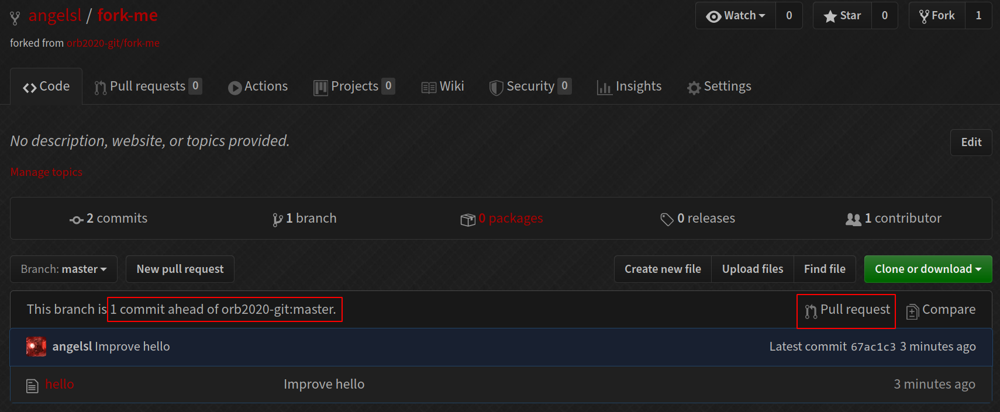

Introduction to Git
Orbital 2020
Things you need
Things to keep with you

What is Git?
A distributed version control system (DVCS)
Every commit is a snapshot of your files
The three states
Each tracked file can be in three states:
- Committed: the file is stored in the Git database
- Modified: the file has been modified but not committed
- Staged: the file has been put into the staging area, to be committed

Getting started
In each commit, Git stores the author and committer's name and email
You need to configure Git:
git config --global user.name "Your Name"
git config --global user.email "your@email.com"
Setting your editor
Git sometimes launches an editor e.g. when you commit, to edit the commit message
Configure your favourite editor:
git config --global core.editor nano
git config --global core.editor emacs
git config --global core.editor "code --wait --new-window" # VS Code
git config --global core.editor "'C:/Program Files/Notepad++/notepad++.exe' -multiInst -nosession"
git config --global core.editor "'C:/Program Files/Microsoft VS Code/code.exe' -n -w"
Git manual
You can always access the help for a command via
git help cmd
or access the help summary by
git cmd -h
Initialising a repository
Let's create a new Git repository.
$ mkdir my-git-repo
$ cd my-git-repo
$ git init
Initialized empty Git repository in my-git-repo/.git/
Stage a file
Create a new file in my-git-repo, however you want. Then add it:
$ echo 'Hello world' > hello
$ git add hello
Check the status
We've just staged a file! So what is the state of the repository?
$ git status
On branch master
No commits yet
Changes to be committed:
(use "git rm --cached <file>..." to unstage)
new file: hello
Look at the staged diff
What exactly did we stage?
$ git diff --staged
diff --git a/hello b/hello
new file mode 100644
index 0000000..802992c
--- /dev/null
+++ b/hello
@@ -0,0 +1 @@
+Hello world
Make your first commit
$ git commit -m "Add hello"
[master (root-commit) 5d74ce3] Add hello
1 file changed, 1 insertion(+)
create mode 100644 hello
You can leave the part out. Git will open your editor for you to compose a commit message.
Look at your commit
$ git show
commit dc37b1cb2627f9829db0072cfa7d3d6bf9eb6822 (HEAD -> master)
Author: Your Name <your@email.com>
Date: Sat May 9 21:16:45 2020 +0800
Add hello
diff --git a/hello b/hello
new file mode 100644
index 0000000..802992c
--- /dev/null
+++ b/hello
@@ -0,0 +1 @@
+Hello world
Make some changes, and look at them
Make edits to hello (or whatever file you made), then
$ git diff
diff --git a/hello b/hello
index 802992c..5d56d4d 100644
--- a/hello
+++ b/hello
@@ -1 +1 @@
-Hello world
+Hello Orbital!
Summary so far
git init: Initialise repositorygit add: Stage changesgit diff (--staged): Look at differences between working tree and index (--staged: index and current commit)git status: Look at repository statusgit commit (-m): Commit staged changes (-m: with this commit message)git show: Show current commit
The commands' manuals are linked. (They all have many more options than what we've covered.)
Viewing commit history
$ git log
commit 19c32155172a20f2fd14fe0e6c0fea954c17296b (HEAD -> master)
Author: Your Name <your@email.com>
Date: Sat May 9 21:36:58 2020 +0800
Change hello to Orbital!
commit dc37b1cb2627f9829db0072cfa7d3d6bf9eb6822
Author: Your Name <your@email.com>
Date: Sat May 9 21:16:45 2020 +0800
Add hello
Ignoring files
Sometimes we don't want Git to track a certain file
$ touch ignore-me
$ git status
On branch master
Untracked files:
(use "git add <file>..." to include in what will be committed)
ignore-me
nothing added to commit but untracked files present (use "git add" to track)
Ignoring files
We can add it to .gitignore
$ echo "/ignore-me" >> .gitignore
$ git status
On branch master
Untracked files:
(use "git add <file>..." to include in what will be committed)
.gitignore
nothing added to commit but untracked files present (use "git add" to track)
.gitignore should be committed.
Ignoring files
$ git add .gitignore && git commit -m "Add .gitignore"
[master 5ada1cf] Add .gitignore
1 file changed, 1 insertion(+)
create mode 100644 .gitignore
$ git status
On branch master
nothing to commit, working tree clean
$ git status --ignored
On branch master
Ignored files:
(use "git add -f <file>..." to include in what will be committed)
ignore-me
nothing to commit, working tree clean
What to ignore?
Typically, we ignore files like build artifacts and generated files that are usually derived from the human-authored code in the repository. E.g.
- dependency caches like
/node_modules - compiled code like
.o,.pycfiles - build output directories like
/bin,/out - runtime-generated files like log files
- personal configuration files e.g. of your IDE
.gitignore format
/logs/*/*.log
/logs/**/*.log
**/logs
**/logs/debug.log
*.log
/debug.log
debug.log
Branching and collaboration
Branches
... let you have multiple lines of development happen simultaneously.
In Git, branching is extremely fast and lightweight. A branch is simply a pointer to a commit; the default branch is typically master.
HEAD is a special pointer to the branch you are currently on.

Creating a branch
$ git checkout -b new-feature
Switched to a new branch 'new-feature'
$ git show
commit 5ada... (HEAD -> new-feature, master)
Author: Your Name <your@email.com>
Date: Sat May 9 21:44:32 2020 +0800
Add .gitignore
Alternatively:
$ git branch new-feature
$ git checkout new-feature
Switched to branch 'new-feature'
Creating a branch
Listing branches
$ git branch
master
* new-feature
Changing branches
$ git checkout master
Switched to branch 'master'
Fast-forward merging
Let's develop new-feature a bit, then merge it back to master.
$ echo "bye" > bye
$ git add bye && git commit -m "Add farewell"
[new-feature b53e9cf] Add farewell
1 file changed, 1 insertion(+)
create mode 100644 bye
Fast-forward merging
Fast-forward merging
$ git checkout master
Switched to branch 'master'
$ git merge new-feature
Updating 5ada1cf..b53e9cf
Fast-forward
bye | 1 +
1 file changed, 1 insertion(+)
create mode 100644 bye
Fast-forward merging
Deleting branches
Now that we're done with new-feature, we can delete it.
$ git branch -d new-feature
Deleted branch new-feature (was b53e9cf).
Cloning repositories
We're going to clone a repository to use later on. Go to merge-conflict, and look for this:
Cloning repositories
$ git clone https://github.com/orb2020-git/merge-conflict.git
Cloning into 'merge-conflict'...
remote: Enumerating objects: 18, done.
remote: Counting objects: 100% (18/18), done.
remote: Compressing objects: 100% (10/10), done.
remote: Total 18 (delta 0), reused 18 (delta 0), pack-reused 0
Unpacking objects: 100% (18/18), done.
$ cd merge-conflict/
$ ls
bye hello
Merge conflicts setup
First, checkout conflict-1 and conflict-2 to create your local copies of the branches. Then go back to master.
$ git checkout conflict-1
Branch 'conflict-1' set up to track remote branch 'conflict-1' from 'origin'.
Switched to a new branch 'conflict-1'
$ git checkout conflict-2
Branch 'conflict-2' set up to track remote branch 'conflict-2' from 'origin'.
Switched to a new branch 'conflict-2'
$ git checkout master
Switched to branch 'master'
Your branch is up to date with 'origin/master'.
Merge conflicts
Merge conflicts
$ git log --graph --all
* commit ba119655f9009085d5f3fd72cf29787fe1aef05f (origin/conflict-2)
| Author: Your Name <your@email.com>
| Date: Sun May 10 00:15:38 2020 +0800
|
| Change bye to farewell
|
| * commit 87a92c314d38f8941f61053991086d16f08a5d6f (origin/conflict-1)
|/ Author: Your Name <your@email.com>
| Date: Sun May 10 00:15:15 2020 +0800
|
| Make bye more formal
|
* commit b53e9cfb656a633f207b6099bf413c08a0011af5 (HEAD -> master, origin/master, origin/HEAD)
Merge conflicts
Now, try to merge conflict-1 and conflict-2 into master.
$ git merge conflict-1
Updating b53e9cf..87a92c3
Fast-forward
bye | 2 +-
1 file changed, 1 insertion(+), 1 deletion(-)
$ git merge conflict-2
Auto-merging bye
CONFLICT (content): Merge conflict in bye
Automatic merge failed; fix conflicts and then commit the result.
Handling merge conflicts
$ git status
On branch master
Your branch is ahead of 'origin/master' by 1 commit.
(use "git push" to publish your local commits)
You have unmerged paths.
(fix conflicts and run "git commit")
(use "git merge --abort" to abort the merge)
Unmerged paths:
(use "git add <file>..." to mark resolution)
both modified: bye
no changes added to commit (use "git add" and/or "git commit -a")
Handling merge conflicts
$ cat bye
<<<<<<< HEAD
Goodbye!
=======
Farewell!
>>>>>>> conflict-2
What we have in master
What we want to merge in conflict-2
Handling merge conflicts
Fix the merge conflict however you'd like, then commit.
$ echo 'Farewell!' > bye
$ git add bye && git commit
[master 00e746b] Merge branch 'conflict-2'
$ git show
commit 00e746be657f4ca8e2adde376d09dd6af0533008 (HEAD -> master)
Merge: 87a92c3 ba11965
Author: Your Name <your@email.com>
Date: Sun May 10 00:43:12 2020 +0800
Merge branch 'conflict-2'
Handling merge conflicts
Creating a new GitHub repository
Creating a new GitHub repository
Creating a new GitHub repository
Pushing to a new GitHub repository
$ mkdir my-new-repo && cd my-new-repo
$ git init
Initialized empty Git repository in /tmp/my-new-repo/.git/
$ echo 'Hello world!' > hello
$ git add hello && git commit -m "Initial commit"
[master (root-commit) 18cac44] Initial commit
1 file changed, 1 insertion(+)
create mode 100644 hello
$ git remote add origin git@github.com:.../my-new-repo.git
$ git push -u origin master
Enumerating objects: 3, done.
Counting objects: 100% (3/3), done.
Writing objects: 100% (3/3), 220 bytes | 220.00 KiB/s, done.
Total 3 (delta 0), reused 0 (delta 0)
To github.com:.../my-new-repo.git
* [new branch] master -> master
Branch 'master' set up to track remote branch 'master' from 'origin'.
Updating your repository
$ git pull origin master
From https://github.com/orb2020-git/fork-me
* branch master -> FETCH_HEAD
Already up to date.
Alternatively, if your branch is tracking a remote:
$ git pull
Already up to date.
pull is roughly equivalent to a fetch and merge.
So if there are merge conflicts, you handle them as you did earlier.
Updating with rebase
$ git pull --rebase
Already up to date.
Rebase vs merge
HTTPS vs SSH
It doesn't really matter.
Use HTTPS if you don't have an SSH key set up with GitHub, or if it is a repository that you cannot write to.
Use SSH if you have an SSH key set up, and you can write to the repository.
Forking and PR setup
Clone this repository: fork-me.
$ git clone https://github.com/orb2020-git/fork-me.git
Cloning into 'fork-me'...
remote: Enumerating objects: 3, done.
remote: Counting objects: 100% (3/3), done.
remote: Total 3 (delta 0), reused 3 (delta 0), pack-reused 0
Unpacking objects: 100% (3/3), done.
Forking and PR
You've made some improvements, and now you want it upstreamed!
$ cd fork-me/
$ nano hello # Edit hello
$ git add hello && git commit -m "Improve hello"
[master df48f95] Improve hello
1 file changed, 1 insertion(+), 1 deletion(-)
Forking and PR
Fork the repository:
Forking and PR
Get the URL:
Update your repository
Make sure there haven't been new changes made to the upstream.
$ git pull --rebase
Already up to date.
We use --rebase because merge commits are generally frowned-upon in GitHub-style PRs.
Forking and PR
Add the remote, and push
$ git remote add fork git@github.com:.../fork-me.git
$ git push fork master
Enumerating objects: 5, done.
Counting objects: 100% (5/5), done.
Writing objects: 100% (3/3), 248 bytes | 248.00 KiB/s, done.
Total 3 (delta 0), reused 0 (delta 0)
To github.com:.../fork-me.git
18cac44..df48f95 master -> master
Forking and PR
Forking and PR
Forking and PR

Commit message discipline
First line: 80-character title, phrased imperatively
Then if your change is complex, elaborate on the change in prose.
Change greeting from "Hi" to "Hello"
"Hi" is a bit too informal for a greeting. We should change it to "Hello" instead,
so that our users don't feel like we are being too informal. Blah blah blah blah.
Blah blah.
A real commit message
Randomly chosen from the Linux kernel.
net_sched: sch_fq: handle non connected flows
FQ packet scheduler assumed that packets could be classified
based on their owning socket.
This means that if a UDP server uses one UDP socket to send
packets to different destinations, packets all land
in one FQ flow.
This is unfair, since each TCP flow has a unique bucket, meaning
that in case of pressure (fully utilised uplink), TCP flows
have more share of the bandwidth.
If we instead detect unconnected sockets, we can use a stochastic
hash based on the 4-tuple hash.
This also means a QUIC server using one UDP socket will properly
spread the outgoing packets to different buckets, and in-kernel
pacing based on EDT model will no longer risk having big rb-tree on
one flow.
Note that UDP application might provide the skb->hash in an
ancillary message at sendmsg() time to avoid the cost of a dissection
in fq packet scheduler.
Signed-off-by: Eric Dumazet <edumazet@google.com>
Signed-off-by: David S. Miller <davem@davemloft.net>
For Orbital
You'll be working mostly with just one other person.
You will probably both work on the main (master) branch together. Two people is small enough that merge conflicts shouldn't be too frequent.
Keep a good commit history. It will be useful once you have a substantial codebase and want to figure out why you did something, etc.
GitHub tip
You can pull request between branches in the same repository.
This is useful if you want your partner to review something before merging, or if you set up automated CI checks, etc.

Summary since the last summary
git log: View the log.gitignore: Ignore filesgit checkout: Checkout a branch (and also files, etc)git merge: Merge a branchgit clone: Clone a remote repositorygit remote: Manage remotesgit push: Push your branch to a remotegit pull: Pull updates from a remote to your repository
Commit manipulation
Clone another repo
Let's clone another repository to use for this section.
$ git clone https://github.com/orb2020-git/big-repo.git
Cloning into 'big-repo'...
remote: Enumerating objects: 12, done.
remote: Counting objects: 100% (12/12), done.
remote: Compressing objects: 100% (5/5), done.
remote: Total 12 (delta 0), reused 12 (delta 0), pack-reused 0
Receiving objects: 100% (12/12), done.
This repository
$ git log --graph --all --oneline
* d1f4fcc (HEAD -> master, origin/master, origin/HEAD) Add file3
| * 367597c (origin/new-file) Add file2
|/
* 643aec6 Update file to c
* 4ec21c7 Update file to b
* 055cab4 Initial commit
Revert
Create a commit to reverse a previous commit.
$ git log --graph --oneline
* d1f4fcc (HEAD -> master, origin/master, origin/HEAD) Add file3
* 643aec6 Update file to c
* 4ec21c7 Update file to b
* 055cab4 Initial commit
Suppose we want to revert this commit.
Revert
$ git revert 643aec6
[master 7b73baf] Revert "Update file to c"
1 file changed, 1 insertion(+), 1 deletion(-)
$ git show
commit 7b73baf229e2b8db19bc594c450743b50adf649d (HEAD -> master)
Author: Your Name <your@email.com>
Date: Tue May 12 01:21:31 2020 +0800
Revert "Update file to c"
This reverts commit 643aec6d2a1b4cd485d678886fc1cef25b15bee0.
diff --git a/file b/file
index f2ad6c7..6178079 100644
--- a/file
+++ b/file
@@ -1 +1 @@
-c
+bReset
Undo git add.
$ echo e > file
$ git add file
$ git status
On branch master
Changes to be committed:
(use "git restore --staged <file>..." to unstage)
modified: file
$ git reset file
Unstaged changes after reset:
M file
$ git status
On branch master
Changes not staged for commit:
(use "git add <file>..." to update what will be committed)
(use "git restore <file>..." to discard changes in working directory)
modified: file
no changes added to commit (use "git add" and/or "git commit -a")
Checkout
Undo changes to a file in the working tree.
$ echo e > file
$ git status
On branch master
Changes not staged for commit:
(use "git add <file>..." to update what will be committed)
(use "git restore <file>..." to discard changes in working directory)
modified: file
no changes added to commit (use "git add" and/or "git commit -a")
$ git checkout -- file
$ git status
On branch master
nothing to commit, working tree cleanCherry-pick
"Pluck" a commit(s) and apply it to your current branch.
$ git log --graph --oneline --all
* 7b73baf (HEAD -> master) Revert "Update file to c"
* d1f4fcc (origin/master, origin/HEAD) Add file3
| * 367597c (origin/new-file) Add file2
|/
* 643aec6 Update file to c
* 4ec21c7 Update file to b
* 055cab4 Initial commit
We want this commit to be a child of 7b73baf.
Cherry-pick
$ git cherry-pick 367597c
[master aff5aa7] Add file2
Date: Tue May 12 00:27:26 2020 +0800
1 file changed, 1 insertion(+)
create mode 100644 file2
Cherry-pick
$ git log --graph --oneline --all
* aff5aa7 (HEAD -> master) Add file2
* 7b73baf Revert "Update file to c"
* d1f4fcc (origin/master, origin/HEAD) Add file3
| * 367597c (origin/new-file) Add file2
|/
* 643aec6 Update file to c
* 4ec21c7 Update file to b
* 055cab4 Initial commit
Commit plucked!
Reset (2)
Reset also moves a branch. Three modes of reset:
- Hard: move the branch, and reset the index (staging area) and working tree.
- Mixed: move the branch and reset the index, but leave the working tree.
- Soft: move the branch only.
Reset (2)
$ git log --graph --oneline --all
* aff5aa7 (HEAD -> master) Add file2
* 7b73baf Revert "Update file to c"
* d1f4fcc (origin/master, origin/HEAD) Add file3
| * 367597c (origin/new-file) Add file2
|/
* 643aec6 Update file to c
* 4ec21c7 Update file to b
* 055cab4 Initial commit
We want master to point to this commit again. (i.e. discard the cherry-pick we did)
Reset (2)
$ git reset --hard 7b73baf
HEAD is now at 7b73baf Revert "Update file to c"
$ git log --graph --all --oneline
* 7b73baf (HEAD -> master) Revert "Update file to c"
* d1f4fcc (origin/master, origin/HEAD) Add file3
| * 367597c (origin/new-file) Add file2
|/
* 643aec6 Update file to c
* 4ec21c7 Update file to b
* 055cab4 Initial commit
Warning: don't do this if you've already pushed!
Rebase
Pluck your current branch and put it on top of another branch.
$ git checkout new-file
Branch 'new-file' set up to track remote branch 'new-file' from 'origin'.
Switched to a new branch 'new-file'
$ git rebase master
Successfully rebased and updated refs/heads/new-file.
$ git log --graph --all --oneline
* 95f989c (HEAD -> new-file) Add file2
* 7b73baf (master) Revert "Update file to c"
* d1f4fcc (origin/master, origin/HEAD) Add file3
| * 367597c (origin/new-file) Add file2
|/
* 643aec6 Update file to c
* 4ec21c7 Update file to b
* 055cab4 Initial commit
Interactive add
Choose specific changes to stage
$ git add -p
diff --git a/file b/file
index 6178079..de98044 100644
--- a/file
+++ b/file
@@ -1 +1,3 @@
+a
b
+c
(1/1) Stage this hunk [y,n,q,a,d,s,e,?]? s
Split into 2 hunks.
@@ -1 +1,2 @@
+a
b
(1/2) Stage this hunk [y,n,q,a,d,j,J,g,/,e,?]? y
@@ -1 +2,2 @@
b
+c
(2/2) Stage this hunk [y,n,q,a,d,K,g,/,e,?]? n
$ git diff --staged
diff --git a/file b/file
index 6178079..422c2b7 100644
--- a/file
+++ b/file
@@ -1 +1,2 @@
+a
b
A word on editing history
Some commands, like the last two, allow you to alter the history of a branch.
Avoid doing so if you have already pushed those commits, because if you push them again, Git will now treat them as diverging histories and attempt to merge them, leading to potentially large merge conflicts and/or messy histories.
Summary since the last summary
git revert: Revert a commitgit reset: Unstage filesgit checkout: Checkout files (and also a branch)git cherry-pick: Apply commitsgit reset(2): Move/"reset" a branchgit rebase: "Rebase" a branchgit add -p: Interactively add
Where to go from here?
Some slightly more advanced commands:
- Specifying commit ranges: for commands like log, cherry-pick, etc
git rebase -i: interactive rebase—edit historygit bisect: Find the first commit with a bug, etcgit submodule: Include another repository in your current repositorygit subtree: Extract a subdirectory (incl. commit history) into a separate repository